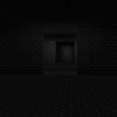
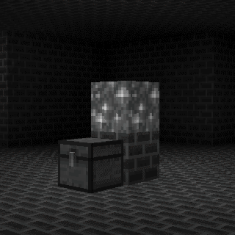
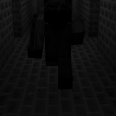

"but at least
i have this block
my
block"
- Eyeless One



Brickways is a Labyrinthine type, dangerous Layer 1 dimension accessible from Wonderland[D]. It is characterised by being entirely made out of building bricks, with the only source of illumination being redstone torches. Small pools of water and chests may occasionally be encountered aswell. All chests contain a copy of a journal. These journals explain the exit method of this dimension, and the origins of the sole entity residing here. To enter, find one of the three pyramid structures in Wonderland[D], all of them will be made out of bricks. Once found, break inside. You will find a black portal and potentially a chest aswell. Entering the portal will take you here. There is only a singular entity present in this dimension. A humanoid whose eyes are missing. It is completely passive until someone breaks one of the many blue Crystal Blocks found scattered across the dimension. Doing this will enrage the Eyeless One. It will seek out whoever broke the block and relentlessly pursue anyone that is spotted by it. Despite it's blindness, it has a great mental map of the maze and can effortlessly navigate it. It may also break blocks with it's pickaxe to aid itself in a chase. On top of that, it has a heightened sense of hearing. One must do their upmost best to be as quiet as possible when the entity is nearby. The slightest disturbance might cause it to give chase. In the scenario that it does give chase, the best thing one can do is flee as fast as they can. Do not try to fight it as it is on the thougher end of the spectrum. Being comparable to an Iron Golem. Turn sharp corners frequently and try to gain distance in any way you can. It will eventually lose you. Considering all of this, one might be lead to believe the easiest way to pass through this dimension would be to simply not touch the Crystal Blocks. Unfortunelty, in order to exit this dimension, atleast one Crystal Block must be broken. This will cause white portal pillars to manifest across the maze. Even then it is not as simple as just entering the portal, however. Various fake portals will simultaneously begin to appear. To exit, one must find a real portal right after breaking a Crystal Block. This will take you back to Wonderland[D]. While there might not be an immediate reason to venture to this dimension, this is the only known source of blue crystals. While a purpose for them is not discovered yet, they are important for research nonetheless.
Threat level: 2
Layer: 1
Name: Brickways
Type: Labyrinthine